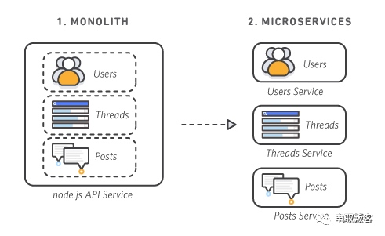
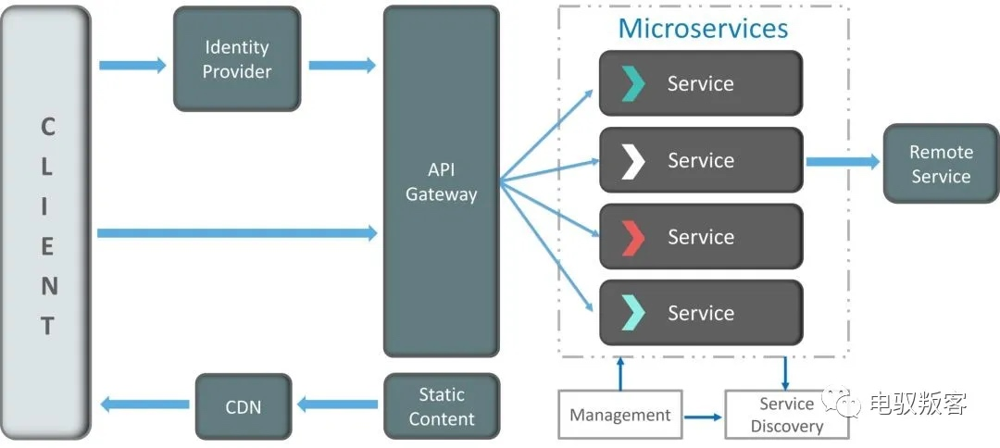
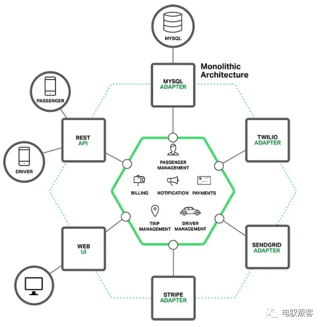
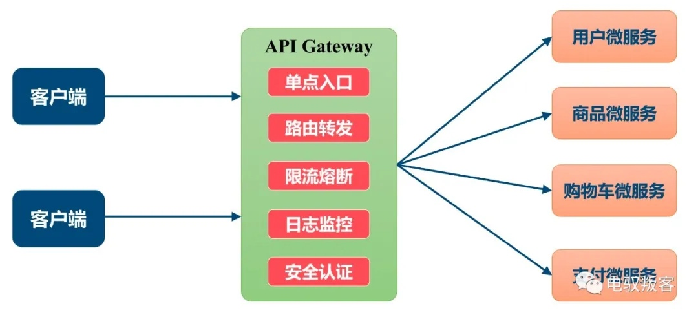
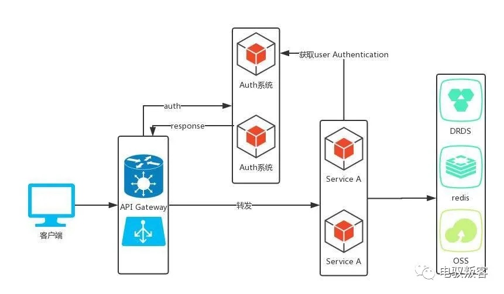
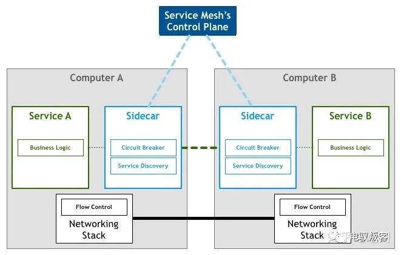
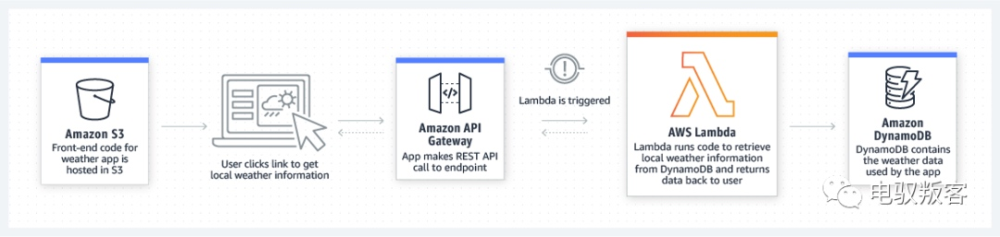

一篇小文，主要是通过安全的视角来简单讨论一下微服务架构下容易出现的一些去权限安全问题，涉及到开发细节说错的时候还望谅解。
一、微服务与微服务架构
微服务是一种开发软件的架构和组织方法，其中软件由通过明确定义的 API 进行通信的小型独立服务组成。这些服务由各个小型独立团队负责；采用UNIX设计的哲学，每种服务只做一件事，是一种松耦合的能够被独立开发和部署的无状态化服务。
微服务具有两个关键特性：自主性、专用性，具有敏捷性、灵活扩展、轻松部署、技术自由、可重复使用的代码、弹性等优势[1]。

从上边的描述可以看出，微服务更多的是一种方法，而微服务架构则是实践微服务的具体实现，不同厂商、不同开发的实现方式各有差异，大概架构基本如下图[2]。它使得开发可以专注自由的开发他负责的服务，解决了系统的复杂性，可以独立部署，与DevOps开发流程契合等，这也难怪现在几乎全民微服务了。

但是哪有什么银弹，优点越多的技术带来的负面影响往往越大。
二、微服务的访问权限困境
在微服务架构下，一个应用被拆分为多个微服务，这样一来，原先单体架构下的权限体系就不再能满足微服务的鉴权需求了，每个微服务都需要对自身API进行权限管控，需要对接账号体系和明确哪些角色有权限访问；同时还有来自服务之间的调用等。
在这种情况下，无论是通过session方案还是token方案，都需要开发去自己维护这一权限体系，那么问题就来了。业务产品在后边追，各种发布封网在前边拦，往往会为了完成业务功能而取舍掉权限的部分，又或者不同的开发同学对于鉴权的理解不一致，甚至认为判断有没有登陆就认为已经完成了权限校验。
随着这类API的越来越多，就会发现同类安全问题频繁发生，特别是未授权访问这类低级的漏洞。

三、绕不过的API Gateway
一方面为了管理乱糟糟的API调用关系，一方面为了解决上边提到的风险，微服务的调用需要一个统一管控的部分，也就是API Gateway。现在是不是就不会出现越权漏洞了呢？
想法是美好的，但现实往往啪啪打脸，Gateway的架构缺陷往往会造成更大的风险。
- API Gateway 仅仅是个出入口
这类网关往往只起到了一个路由的作用，它可能只有一个域名和简单的路由转发功能，将同一部分业务的API通过同一个域名开发出去，将API的权限校验全部交给相应的开发去搞，当出现未授权访问漏洞时，双方就开始扯皮，这个权限校验不是你应该做的吗？特别是当这业务特别庞大时，几百几千个API都接入，这可真是个灾难～
- API Gateway 通过黑名单控制访问权限
有时候需要控制一部分API开放公网另一部分不对外开放，有时候一部分API需要访问控制另一部分可以公开访问等。在解决这类需求时，很多开发会把API Gateway设计成黑名单模式，例如不能对外开发的API需要添加到blacklist中，又或者需要做菜单访问控制的API需要主动去配置。从文字上，这貌似没有什么问题，合情又合理，但是回到人性上，人是健忘的和怕麻烦的，所以就导致经常出现内部API忘了配置blacklist开放公网或忘了配置权限菜单造成未授权访问漏洞的情况。
- API自动编排服务
这两年出现了一些提供快速搭建应用能力的平台，通过网关能力，编排能力以及多种类型的服务对接、统一开放的服务市场，来完成服务发现，服务生产，服务消费的全链路的服务流程。这对于非开发的同学开发应用或帮助开发同学快速发布应用，是很有意义的，但是随之而来的就是它的权限校验问题，在编排时，权限判断逻辑是否是必选项、接入账号体系后是否有角色配置关联、是否支持数据权限的校验等等，任何一个点出现问题，整个平台的应用可能都会存在风险。
随着这类情况越来越多，通过应用数量来看业务规模已经不太行的通了，有时候一个应用可能会有几百上千个API[3]，背后又对应着几十上百个开发，对于传统的SDL来说太难落地了[4]，关于API的安全治理，是一个复杂的体系，有机会细聊。
(这难道不是越权漏洞挖掘的思路嘛)

四、基于API Gateway权限校验的一些想法
实际的API Gateway设计涉及到多个方面，安全和性能往往在一个平衡的状态，下边的仅供参考
安全工程师可以不介入到每个应用进行安全评审，但是API Gateway类的应用一定要覆盖和持续跟进
在调用者和被调用者中间加一层网关，每次调用时进行权限校验。充分利用API网关，完成将身份验证和路由功能
在Gateway或账号管理平台上维护API与角色的关系，在Gateway判断API与角色是否匹配，可以解决访问权限(垂直权限)越权的风险
当通过API Gateway控制router时，公网可访问的列表用白名单方式，只有主动添加才可以对外开放
每个微服务的开发都应该为其数据访问权限负责

五、这个世界是一个圆
关于Service Mesh架构我们下次再聊。

每一次开发架构的更迭，都会带来新的安全挑战，现在越来越火的Serverless、FaaS等也一定会带来一系列新的安全挑战，说不定再过一段时间又回到了最初的单体架构。

参考：
[1]https://aws.amazon.com/cn/microservices/
[2]http://dockone.io/article/3687
[3]API安全全链路解决方案写了好久，但是还有几个关键点在实践场景中没有跑顺畅，再等等(没有实践，没有发言权)
[4]DevSecOps同样，在实践的路上，还不敢拿出来班门弄斧
[5]图片来源网络
本文由 蓝骨
创作，采用 知识共享署名4.0 国际许可协议进行许可
本站文章除注明转载/出处外，均为本站原创或翻译，转载前请务必署名
最后编辑时间为: 2021-07-16T22:09:48+08:00